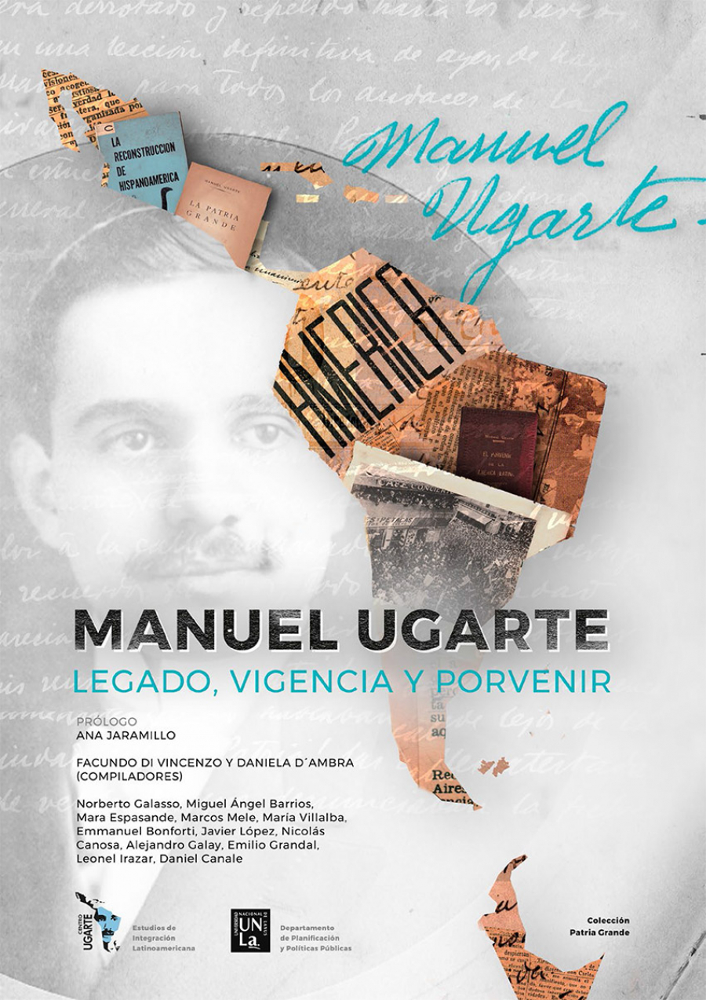

Con presentación de Ana Jaramillo y prologado por Norberto Galasso, la UNLa reeditó tres de las obras de Manuel Ugarte: El porvenir de la América Latina; La Patria Grande; y La reconstrucción de Hispanoamérica. El gran escritor y ensayista nacido en 1875 fue un defensor apasionado del proyecto de Unidad latinoamericana imaginado por Bolívar y San Martín, y un manifiesto enemigo del imperialismo, tanto como de imposiciones ideológicas. Defendió todas las causas populares latinoamericanas y militó por un socialismo de carácter nacional, posición que le valió la exclusión de su obra y su figura reivindicadas, en parte, a través de este libro.
Este libro es resultado del trabajo colectivo de docentes, investigadores y estudiantes del Centro de Estudios de Integración Latinoamericana "Manuel Ugarte". Luego de la realización de las I Jornadas del Centro de Estudios de Integración Latinoamericana "Manuel Ugarte" Legado, vigencia y porvenir. Nuestra América como relanzamiento, desarrolladas en octubre de 2017, surgió la propuesta de difundir las ponencias presentadas bajo el formato de una publicación que en este momento ve la luz. Queremos agradecer especialmente a Miguel Ángel Barrios y a Norberto Galasso, biógrafos de Manuel Ugarte por su acompañamiento, aporte y solidaridad en compartir sus escritos y reflexiones para esta publicación. También, destacamos el esfuerzo de los estudiantes por atreverse a la invalorable tarea de escribir, considerando que la formación de jóvenes investigadores es fundamental para continuar el camino de análisis y difusión de los pensadores silenciados de Nuestra América.

La obra se organiza en tres partes: la primera presenta los aportes de los biógrafos de Manuel Ugarte, Miguel Ángel Barrios y Norberto Galasso, quienes desde sus investigaciones han hecho las contribuciones más importantes al abordaje de la figura del autor. La segunda parte recopila las ponencias presentadas en las I Jornadas "Manuel Ugarte" en las que participaron docentes e investigadores de múltiples formaciones teóricas, aportando una mirada enriquecedora al respecto de la figura de Ugarte. La tercera parte integra las reflexiones de estudiantes de la Universidad Nacional de Lanús a partir de las lecturas de fuentes y escritos del pensador.res.
Esperamos con esta obra coadyuvar a la difusión y conocimiento de este pensador de la Patria Grande que aún sigue siendo un "silenciado" o "maldito" en los ámbitos de producción científica argentina.